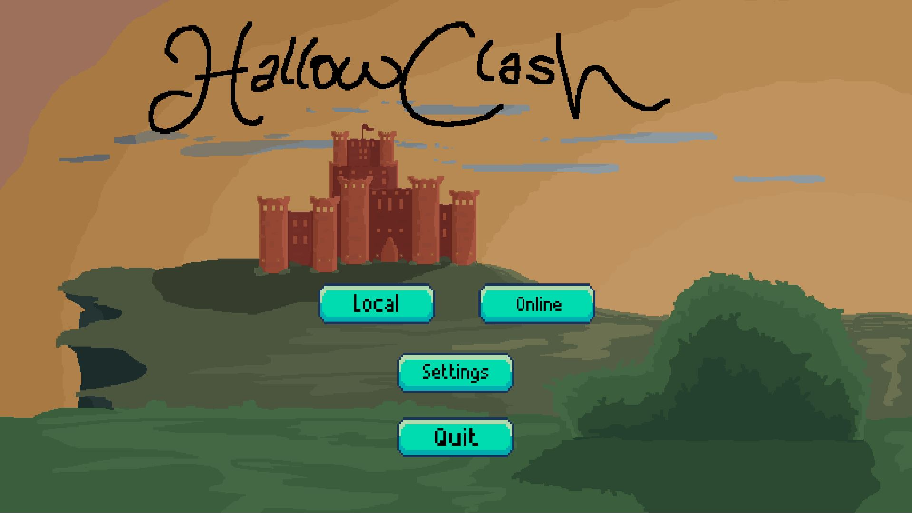
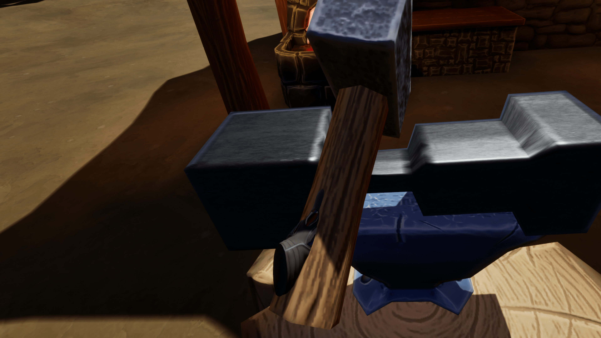
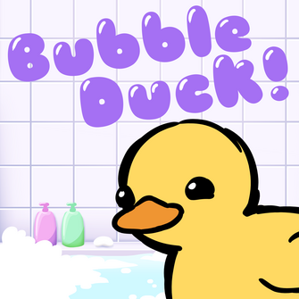
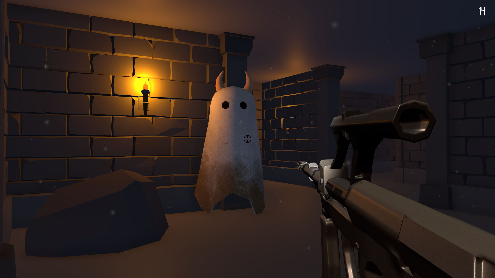
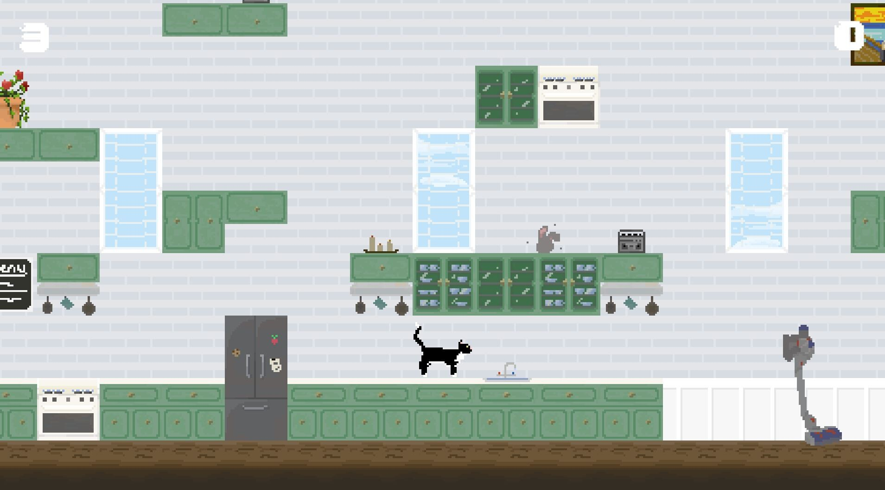
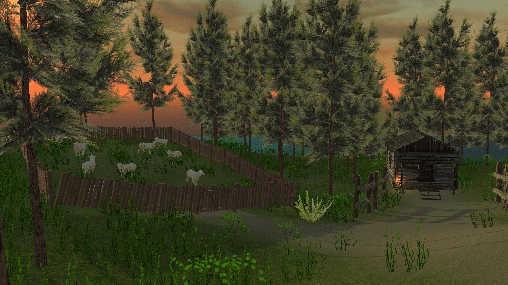
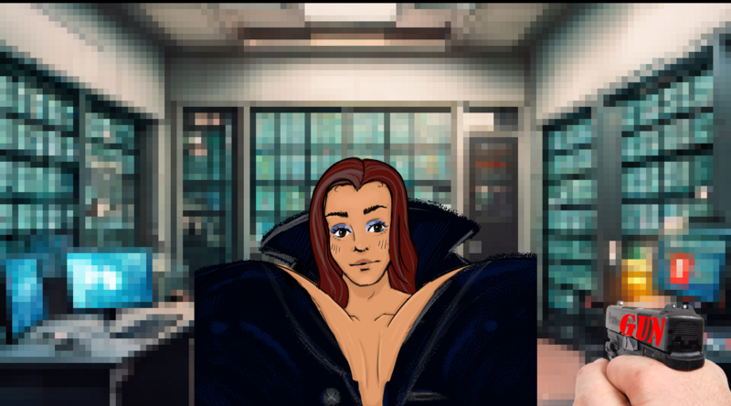

HallowClash

A Medievel-themed 2D pixel-art fighter game for my senior capstone!
Itch.io
lacksmith

Stylized VR game where you forge weapons with your own hands as a Blacksmith.
Itch.io
Bubble Duck

Competitive survival game for one to four players where you can compete against your friends locally. Made for Global Game Jam 2025.
Itch.io
Demi-Ghost

Escape, Survive, and Find all three coins to survive the paranormal in this fun first-person shooter!
Itch.io
Cookie Cat

Casual adventure of being a cat! A platform game where you get to collect cookies to advance.
Itch.io
Fitheach

Story-mode Adventure game where a shephard loses their sheep on their island.
Itch.io
GUNMETTAL

A visual novel of a spy espionage case for Global Game Jam 2024.
Itch.io